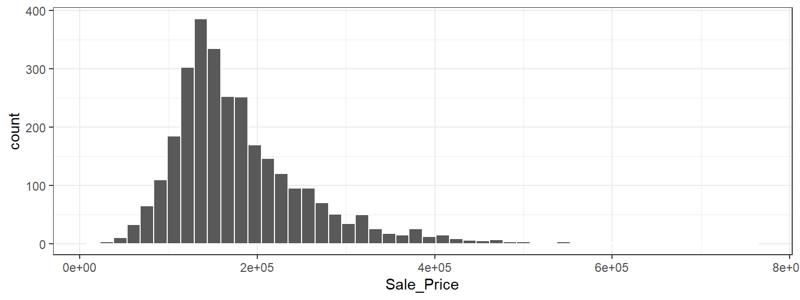
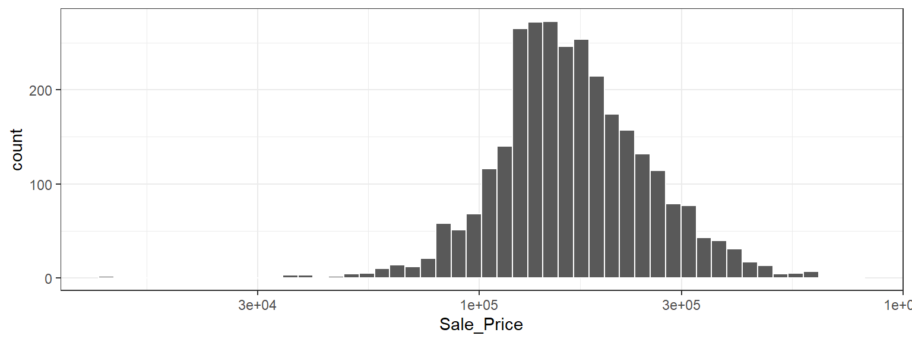

4 Los Datos De Vivienda De Ames
En este capítulo, presentaremos el conjunto de datos de vivienda de Ames (De Cock 2011), que usaremos en ejemplos de modelado a lo largo de este libro. El análisis exploratorio de datos, como el que analizamos en este capítulo, es un primer paso importante para construir un modelo confiable. El conjunto de datos contiene información sobre las propiedades 2,930 en Ames, Iowa, incluidas columnas relacionadas con:
- Características de la casa (dormitorios, garaje, chimenea, piscina, porche, etc.)
- ubicación (barrio)
- información del lote (zonificación, forma, tamaño, etc.)
- calificaciones de condición y calidad
- precio de venta
Nuestro objetivo de modelado es predecir el precio de venta de una casa en función de otra información que tenemos, como sus características y ubicación.
Los datos brutos de vivienda se proporcionan en De Cock (2011), pero en nuestros análisis de este libro utilizamos una versión transformada disponible en el paquete modeldata. Esta versión tiene varios cambios y mejoras en los datos.1 Por ejemplo, se han determinado los valores de longitud y latitud para cada propiedad. Además, algunas columnas se modificaron para que estuvieran más preparadas para el análisis. Por ejemplo:
En los datos sin procesar, si una casa no tenía una característica particular, se codificaba implícitamente como faltante. Por ejemplo, 2,732 las propiedades no tenían callejón. En lugar de dejarlos como faltantes, se volvieron a etiquetar en la versión transformada para indicar que no había ningún callejón disponible.
Los predictores categóricos se convirtieron al tipo de datos de factor de R. Si bien tanto tidyverse como base R han dejado de importar datos como factores de forma predeterminada, este tipo de datos es un mejor enfoque para almacenar datos cualitativos para modelado que cadenas simples.
Eliminamos un conjunto de descriptores de calidad para cada casa, ya que se parecen más a resultados que a predictores.
Para cargar los datos:
4.1 Explorando Las Características De Las Casas En Ames
Comencemos nuestro análisis exploratorio de datos centrándonos en el resultado que queremos predecir: el último precio de venta de la casa (en USD). Podemos crear un histograma para ver la distribución de los precios de venta en Figura fig-ames-sale-price-hist.
library(tidymodels)
tidymodels_prefer()
ggplot(ames, aes(x = Sale_Price)) +
geom_histogram(bins = 50, col= "white")
Este gráfico nos muestra que los datos están sesgados hacia la derecha; Hay más casas baratas que caras. El precio de venta medio fue $160,000, y la casa más cara era $755,000. Al modelar este resultado, se puede argumentar con fuerza que el precio debe transformarse logarítmicamente. Las ventajas de este tipo de transformación son que no se pronosticarían casas con precios de venta negativos y que los errores al predecir casas caras no tendrán una influencia indebida en el modelo. Además, desde una perspectiva estadística, una transformada logarítmica también puede estabilizar la varianza de una manera que haga que la inferencia sea más legítima. Podemos usar pasos similares para visualizar ahora los datos transformados, que se muestran en Figura fig-ames-log-sale-price-hist.
ggplot(ames, aes(x = Sale_Price)) +
geom_histogram(bins = 50, col= "white") +
scale_x_log10()
Si bien no es perfecto, esto probablemente dará como resultado mejores modelos que el uso de datos no transformados, por las razones que acabamos de describir.
Las desventajas de transformar el resultado se relacionan principalmente con la interpretación de los resultados del modelo.
Las unidades de los coeficientes del modelo podrían ser más difíciles de interpretar, al igual que las medidas de desempeño. Por ejemplo, el error cuadrático medio (RMSE) es una métrica de rendimiento común que se utiliza en los modelos de regresión. Utiliza la diferencia entre los valores observados y predichos en sus cálculos. Si el precio de venta está en la escala logarítmica, estas diferencias (es decir, los residuos) también están en la escala logarítmica. Puede resultar difícil comprender la calidad de un modelo cuyo RMSE es 0,15 en una escala logarítmica de este tipo.
A pesar de estos inconvenientes, los modelos utilizados en este libro utilizan la transformación logarítmica para este resultado. A partir de este momento, la columna de resultados está preregistrada en el marco de datos ames:
Otro aspecto importante de estos datos para nuestro modelado es su ubicación geográfica. Esta información espacial está contenida en los datos de dos maneras: una etiqueta cualitativa de Vecindario y datos cuantitativos de longitud y latitud. Para visualizar la información espacial, usemos ambos juntos para trazar los datos en un mapa en Figura fig-ames-map.

Podemos ver algunos patrones notables. Primero, hay un vacío de puntos de datos en el centro de Ames. Esto corresponde al campus de la Universidad Estatal de Iowa donde no hay casas residenciales. En segundo lugar, si bien hay varios barrios adyacentes, otros están geográficamente aislados. Por ejemplo, como muestra Figura fig-ames-timberland, Timberland está ubicado aparte de casi todos los demás vecindarios.

Figura fig-ames-mitchell visualiza cómo el barrio de Meadow Village en el suroeste de Ames es como una isla de propiedades dentro del mar de propiedades que conforman el barrio de Mitchell.

Una inspección detallada del mapa también muestra que las etiquetas de los barrios no son totalmente fiables. Por ejemplo, Figura fig-ames-northridge muestra que algunas propiedades etiquetadas como ubicadas en Northridge están rodeadas de casas en el vecindario adyacente de Somerset.

Además, hay diez casas aisladas etiquetadas como en Crawford que, como puedes ver en Figura fig-ames-crawford, no están cerca de la mayoría de las otras casas en ese vecindario.

También es notable el vecindario del “Departamento de Transporte de Iowa (DOT) y Ferrocarriles” adyacente a la carretera principal en el lado este de Ames, que se muestra en Figura fig-ames-dot-rr. Hay varios grupos de viviendas dentro de este vecindario, así como algunos valores atípicos longitudinales; las dos casas más al este están aisladas de las otras ubicaciones.

Como se describe en el Capítulo sec-software-modeling, es fundamental realizar un análisis de datos exploratorio antes de comenzar cualquier modelado. Estos datos sobre vivienda tienen características que presentan desafíos interesantes sobre cómo se deben procesar y modelar los datos. Describimos muchos de estos en capítulos posteriores. Algunas preguntas básicas que podrían examinarse durante esta etapa exploratoria incluyen:
¿Hay algo extraño o notable en las distribuciones de los predictores individuales? ¿Hay mucha asimetría o distribuciones patológicas?
¿Existen altas correlaciones entre los predictores? Por ejemplo, existen múltiples predictores relacionados con el tamaño de la casa. ¿Algunas son redundantes?
¿Existen asociaciones entre los predictores y los resultados?
Muchas de estas preguntas serán revisadas a medida que estos datos se utilicen a lo largo de este libro.
4.2 Resumen Del Capítulo
Este capítulo presentó el conjunto de datos de vivienda de Ames e investigó algunas de sus características. Este conjunto de datos se utilizará en capítulos posteriores para demostrar la sintaxis de tidymodels. El análisis de datos exploratorios como este es un componente esencial de cualquier proyecto de modelado; EDA descubre información que contribuye a una mejor práctica de modelado.
El código importante para preparar el conjunto de datos de Ames que llevaremos a los capítulos siguientes es:
library(tidymodels)
data(ames)
ames <- ames %>% mutate(Sale_Price = log10(Sale_Price))Para obtener una descripción completa de las diferencias, consulte https://github.com/topepo/AmesHousing/blob/master/R/make_ames.R.↩︎